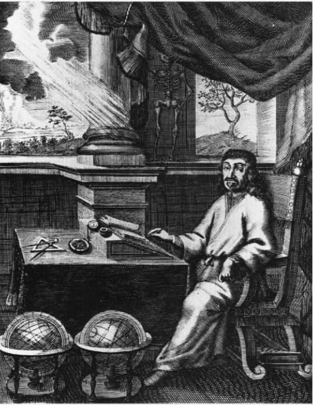

笛卡尔的一些信件表明，他是从1639年11月开始写作《沉思集》的。那时他已在荷兰住了大约十年，隔不了多长时间就更换一次住址。关于这段时间的生活，现有的记述常把他描绘成隐士般的人物，深居简出，只有几位仆人相伴，沉浸在科学实验和科学理论中，偶尔也涉猎哲学。但他其实并没有如此与世隔绝。笛卡尔有一些亲近的朋友，其中有光学理论领域的著名合作者康斯坦丁·惠更斯 [54] ，莱顿大学 [55] 数学教授弗兰兹·凡·舒滕 [56] ，还有贝克曼（只是后来闹翻了）。笛卡尔总是根据远近，经常与这些密友和其他一些人互访或通信。
我们所知的关于笛卡尔私人生活的有限细节大多集中在他旅居荷兰期间。或许是在代芬特尔（1632年他的一位年轻追随者在那里得到了一个教职），笛卡尔邂逅了一位名叫埃莱娜的女人，两人同居并生下了一个女儿。1635年8月7日孩子受了洗，取名弗朗辛。1635年后弗朗辛和埃莱娜似乎已经与笛卡尔分居，只是不定期地与他见面。他竭力向外人掩饰这段关系，她们来访时他总是把弗朗辛称为他的侄女。1640年，小女孩五岁时得热病死了，笛卡尔说这是他一生中最伤心的事。
弗朗辛死前几个月，笛卡尔完成了《沉思集》。1639至1640年冬，他捡起了1629年搁下的讨论形而上学的著作，花了五个月时间修改，并准备出版。他日益迫切地感到，自己需要发表一部神学家能够认可的论著。如果说拉弗莱什公学对《方法谈和论文选》的反应只是谨慎的话，巴黎耶稣会学院则对这部著作表示了真正的敌意，到了1640年夏，笛卡尔开始相信，整个耶稣会都把火力对准了自己。那时他已经完成了“五六篇”形而上学文章，只是还没发表。
新书里面究竟有些什么？和《方法谈》一样，它也采用了一种独特的文学体裁，一方面与它的官方描述——证明基督教真理的护教作品——相符，另一方面也适合它秘而不宣的真实用意——摧毁亚里士多德的体系，即构成物理学经院学说之核心的那些原则。这本书从形式上看是一篇日记，虚构的连续六天智识静修的经历，与圣依纳爵在《神操》 [57] 中更为常见的宗教静修所设计的程式有些相仿。
六天的每一天对应于一篇“沉思”，高潮出现在第三天。正是在《第三沉思》中，笛卡尔说服了自己，他的上帝观念对应于一个真实的存在物。与前两天的沉思联系起来，这无疑是个转折点。在《第一沉思》里，笛卡尔迫使自己怀疑，他的一切 想法是否都有客观对应的存在物。他抛弃了对一切物质客体的信任，甚至不再相信纯物质简单本质 [58] 的存在。他在这里主要依靠的是怀疑主义者提出的魔鬼欺骗心智的假设。在《第二沉思》里他意识到，若自己能被魔鬼欺骗，则必定需要一种欺骗的媒介——思想，而若思想存在，真正的思想者——他自己——也必定存在。这就缩小了第一天静修时确定的怀疑范围。但只有在确定了上帝的存在之后，他才建立了一个基础，可以进而相信自己以外的事物的真实性，相信自己思想或观念的客观性。
他理解的上帝是完美的，因而是至善的：将谬见故意呈现于专注追寻真理的心智面前，对于这样一位上帝来说是不可想象的。错误只有在心智出现游离，或者仓促作出结论，或者受制于不良的思维习惯（例如将事物表面的性质当做内在的属性）时才可能发生。但当心智采取了防范错误的一切措施，却依然相信数字或物体真实存在时，或者发现物质性和三维的广延性之间存在不可否认的联系时，它是不可能陷入谬误的。既然上帝为我们设计的本性是，在我们不能不信时，我们所信的内容不可能为假，那么如果我们的心智深信某些事物或某些联系存在，这一事实本身就足以作为它们真实存在的依据。到了静修的第六天，笛卡尔认定，怀疑物质性客体的存在或者简单本质的真实性都是愚蠢的。他得出结论说，物质性客体的真实样貌虽然与感官得到的印象或许并不相同，但它们的数学属性却是清晰无疑的。由此可以推知，以数学为基础的物理学是可能的。
笛卡尔期待读者能潜下心来，进入自己所叙述的沉思过程，并在脑海中上演书中的整个推理过程，像自己一样先让怀疑的想法聚集，然后慢慢驱逐它们。这对读者期望过高了，即使有读者从头读到尾，他们也不大可能像笛卡尔要求的那样沉浸在书中的细节里。笛卡尔向《第一沉思》（他在该篇中提出了种种理由，让人怀疑不假思索时信以为真的绝大多数东西）的读者建议，他们最好“先花上数月，至少数周，仔细考虑这些主题，然后再往后读”（7.130）。除此以外，他估计读者还需另外花上“至少几天的时间”，才能学会按照《第二沉思》的有些部分所要求的方式来区分精神性与物质性（7.131）。笛卡尔认为，为《沉思集》的“治疗效果”付出这么多时间完全值得。如果真正理解了此书，读者将破除一生的的错误习惯，即在感官经验的基础上建立关于物质世界本质和自身本性的观念。

图5 1701年在阿姆斯特丹出版的笛卡尔著作卷首的作者画像
除了长时间专心阅读外，《沉思集》的读者还面临更大的挑战。他们需要掌握一种新的阅读方法，必须在接触书的前面部分时，真心相信在书的后面部分将作为不可信的东西而被抛弃的那些论点。在回应针对《沉思集》的一组诘难时，笛卡尔对书的这个特点作了辩护：“这种分析式的写作手法允许我们时不时地抛出一些还未详尽考察过的假设。《第一沉思》中就有这样的例子，我提出了许多假设，又在随后的几篇‘沉思’里予以了批驳。”（7.249）根据传统，分析式写作需要遵循一种特别的解释或论证顺序：任何新提出的想法要么不证自明，要么可以从前面的想法推导出，应从显然的、表面的东西出发，逐渐过渡到更隐蔽、更根本的论点。笛卡尔在《沉思集》里却给这种“分析”法添了新花样：更隐蔽、更根本的论点往往迫使读者重新审视，甚至摒弃前面的说法。